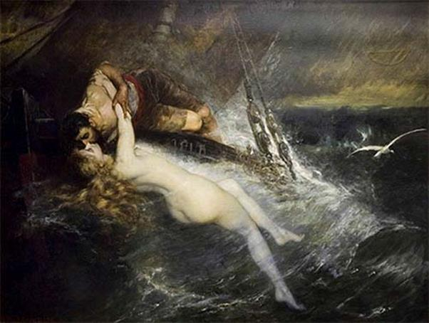

Con thuyền Argo thuận buồm xuôi gió chạy băng băng trên biển Pont-Euxin. Sau ba ngày ba đêm, đất Scythe với bờ biển có bãi cát trắng dài đã hiện ra trước mắt những người Argonautes. Mọi người đều vui mừng. Lần này trở về, những người Argonautes không đi theo con đường cũ nghĩa là không vượt biển Égée để trở về Hy Lạp mà lại cho con thuyền đi ngược dòng sông Istros (ngày nay là sông Danube) để rồi đến một nhánh sông khác của nó rồi đi xuôi xuống biển Adriatique, vùng biển phía tây nước Hy Lạp. Xưa kia những người Hy Lạp cứ tưởng rằng sông Danube nối liền biển Adriatique với Hắc Hải. Họ cũng còn nhầm tưởng rằng dòng sông Po, xưa gọi là Éridan ở nước Ý ngày nay cùng hòa nhập với dòng sông Rhône ở Pháp, làm thành một đường đi, cửa bên này là vịnh Sư Tử, cửa bên kia là biển Adriatique.
Khi con thuyền vào đến cửa sông Istros, đi được một đoạn thì mọi người nhìn lên bờ bỗng thấy từ đâu kéo đến, không biết từ bao giờ một đạo quân đông ngàn ngạt, tinh kỳ phấp phới, vũ khí rợp trời. Nguy hiểm hơn nữa, ngay trước mặt họ trên một dải đất giữa dòng sông như một cù lao nhỏ cũng có một đội phục binh. Mọi người biết rằng mình đã bị đạo quân của Aiétès bao vây. Tình thế thật muôn phần nguy hiểm. Đương đầu với cả một đạo quân binh hùng tướng mạnh, đông như kiến thế kia thì không thể được rồi. Nhưng làm cách nào để tránh khỏi xảy ra một cuộc đụng độ? Một ý nghĩ nhanh như một ánh chớp lóe bên trong trái tim Jason. Jason cho dừng thuyền lại và cử người đến gặp Apsyrtos để điều đình. Những người Argonautes nêu ra quyết định của mình: trao trả Médée cho những người Colchide, địa điểm đón nhận Médée là ngôi đền trên một cù lao nhỏ giữa sông. Tại đây đích thân thủ lĩnh Jason sẽ trao trả cho thủ lĩnh Apsyrtos người con gái của vua Aiétès, đồng thời xin gửi tặng nhà vua nhiều báu vật để bày tỏ lòng hòa hiếu. Còn Bộ lông Cừu vàng hai thủ lĩnh sẽ thương nghị và phân giải sau. Thật ra thì Bộ lông Cừu vàng đã là chiến công của những người Argonautes. Jason thay mặt anh em hoàn thành những công việc của vua Aiétès giao, và như vậy nếu Aiétès giữ đúng lời hứa thì phải làm lễ thật long trọng để chuyển giao Bộ lông Cừu vàng cho những người Argonautes mới phải. Vì thế, việc Bộ lông Cừu vàng thuộc quyền sở hữu của những người Argonautes là hợp lý, hợp pháp.
Apsyrtos theo đúng lời giao ước, đích thân cùng với hai tên quân hầu đi đến ngôi đền thờ. Nhưng khi chàng vừa bước chân vào ngôi đền thì Jason đã phục sẵn từ một chỗ nào đó, rất kín đáo, nhảy xổ ra chém cho một nhát chết tươi. Mưu kế này Jason đã bàn định với Médée. Chính vì thế hai người đã phạm một tội ác tày trời, vô cùng kinh khủng: giết một người không có vũ khí trong tay bằng cách lừa dối. Cả hai tên quân hầu cũng không thoát khỏi lưỡi gươm của Jason. Giết xong Apsyrtos, Jason đem chặt xác ra làm nhiều mảnh và ném xuống sông. Sau đó chàng và Médée xuống thuyền ra lệnh cho anh em thủy thủ nhổ neo, dốc sức chạy ngược lên thượng nguồn sông Istros. Những người Colchide lập tức truy đuổi theo, nhưng trên sóng nước bập bềnh, họ bỗng trông thấy xác người chết. Nhìn ra thì là mảnh xác thủ lĩnh Apsyrtos của họ. Họ đành phải dừng thuyền lại thu lượm những mảnh thi hài người con trai của vua Aiétès để làm lễ an táng. Bởi vì để cho một người chết không được chôn cất là phạm trọng tội đối với thần linh. Apsyrtos chết, quân Colchide mất tướng như rắn không đầu, chẳng biết tiến, thoái ra sao, quyết định thế nào, chính vì lẽ đó mà những người Colchide đành bỏ dở cuộc hành trình truy đuổi.
Con thuyền Argo đi được một chặng đường dài, họ đã ra đến biển Adriatique và sắp tới vùng bờ biển xứ Illyrie. Bỗng nhiên trời nổi gió, mây đen ùn ùn kéo đến và phút chốc một cơn bão dữ dội chưa từng thấy nổi lên. Những con sóng cao như núi cứ nối tiếp nhau đổ xuống. Con thuyền khi thì chao bên trái nghiêng bên phải, khi thì quay tít như chong chóng. Cột buồm, mái chèo bị bẻ gãy. Anh em thủy thủ ra sức chống đỡ nhưng ai nấy đều nghĩ phen này chắc hẳn gửi thân nơi đáy biển. Trong lúc thập tử nhất sinh ấy bỗng một tiếng nói dõng dạc từ mũi thuyền vẳng lên, sang sảng, uy nghiêm. Đó là tiếng nói từ mảnh gỗ sồi ở mũi con thuyền, tiếng nói thiêng liêng truyền đạt ý định của Zeus:
- Hỡi những người thủy thủ Argonautes! Thần Zeus và các vị thần của đỉnh Olympe vô cùng tức giận đối với các người. Các người đã phạm một tội ác tày đình đáng phải trừng phạt nặng. Con thuyền của các người không thể nào về đến quê hương Hy Lạp khi tội ác chưa được tẩy sạch. Chỉ có cách làm nguôi cơn thịnh nộ của các bậc thần linh là các người phải quay thuyền lại, đi tới xứ sở của tiên nữ-phù thủy Circé để xin tiên nữ rửa tội cho thì mới có thể hy vọng trở về đến quê hương Hy Lạp thần thánh một cách yên bình!
Những người Argonautes làm theo lời phán truyền của thần linh. Họ lái con thuyền của mình cho quay ngược về phía bắc, hướng về xứ sở của mụ phù thủy Circé, và ứng nghiệm thay lời truyền phán của thần linh. Khi con thuyền quay mũi về hướng bắc thì bão tan dần, gió ngừng thổi, mặt biển trở lại yên bình.
Con thuyền Argo đi len cách qua nhiều hòn đảo, vượt qua nhiều đoạn đường nguy hiểm, cuối cùng neo đậu lại ở hòn đảo của tiên nữ-phù thủy Circé, em gái của vua Aiétès. Đây là một thiếu nữ xinh đẹp tuyệt vời, pháp thuật bùa chú tài giỏi, một tiên nữ-phù thủy có một không hai của thế giới Đông, Tây vùng biển Địa Trung Hải lúc bấy giờ. Khác với giới phù thủy thường xấu xí, dị dạng dị hình, Circé là một thiếu nữ có nhan sắc hơn người. Circé có tài pha chế các thứ nước phép từ các loại cây cỏ trong rừng. Với thứ nước này, Circé cho ai uống thì có thể biến người đó thành giống vật, con gì tùy ý Circé khi niệm chú. Trong một lần thử nghiệm nước phép của mình, Circé dùng chồng để thử. Rủi thay, do có những trục trặc nghĩa là nước phép chưa thật hoàn thiện, chính xác nên người chồng thân yêu của Circé bị chết. Những người Sarmates kết tội Circé đã ám hại vị vua hiền minh của họ. Họ trục xuất Circé khỏi xứ sở. Vì là con gái của thần Mặt trời-Hélios nên Circé được cha đưa cỗ xe ngựa thần xuống đón, đưa đến trú ngụ ở xứ Étrurie. Tại đây, trong một tòa lâu đài, Circé tiếp tục thử nghiệm, hoàn thiện các loại bùa mê thuốc ngủ của mình, và khi đã thành công, nàng dời đến ở hòn đảo Aiaia, hòn đảo mà những người Argonautes giờ đây đặt chân tới.
Những người Argonautes tường thuật lại hành trình của mình cùng với những biến cố đã xảy ra. Nghe xong, Circé cho thiết lập bàn thờ để làm lễ rửa tội. Nàng giết súc vật để làm lễ hiến tế thần Zeus và các vị thần của thế giới Olympe. Nàng cầu khấn đấng phụ vương Zeus, vị thần tối cao có nhiều quyền lực nhất trong các vị thần, hơn nữa là vị thần có quyền năng rửa sạch tội sát nhân. Circé lấy máu của con vật hiến tế đem bôi vào tay Jason và Médée, rồi đọc những bài cầu nguyện, những lời phù chú trước bàn thờ những nữ thần Érinyes, những nữ thần chịu trách nhiệm truy đuổi đến cùng những kẻ phạm tội. Nàng cầu xin các nữ thần hãy mở lượng khoan hồng, tha tội cho hai phạm nhân, và thực hiện nhiều nghi thức khác nữa.
Việc rửa tội xong xuôi, những người Argonautes lễ tạ thần linh, trao tặng Circé nhiều báu vật rồi lên đường. Hành trình của họ chưa phải đã hết gian nguy. Con thuyền của họ đi vào vùng biển của hai con quái vật Charypde và Scylla. Một con là Charypde chuyên hút nước biển vào bụng rồi lại nhả ra. Thuyền bè đi qua mà đúng lúc nó đang hút nước vào bụng thì chẳng vị thần nào cứu thoát. Còn một con là Scylla, chuyên rình bắt những thủy thủ để ăn thịt. Từ trên ngọn núi cao Scylla thò tay xuống giữa lòng thuyền chộp bắt thủy thủ nhanh như chớp. Chẳng cách gì kéo, giữ lại được những người thủy thủ đã nằm trong tay Scylla. Nhờ nữ thần Héra giúp đỡ, chỉ dẫn con thuyền Argonautes vượt qua được Charypde và Scylla. Phải nhằm đúng lúc Charypde đang nhả nước từ trong bụng ra mà vượt qua, trong khi đó, anh em thủy thủ phải ra sức chèo, không một ai được ra đứng ở mũi thuyền hoặc đuôi thuyền, phải che kín không để cho Scylla nhìn thấy người.
Lại qua một vùng biển hiểm nghèo nữa, nhưng ở đấy chẳng có quái vật nào làm con người kinh hồn táng đởm cả. Ngược lại là đằng khác, con người cảm thấy như đi vào trong mộng, như được bay lên cõi tiên, nhưng dù sao cũng dẫn đến cái chết. Đó là vùng biển của những tiên nữ Sirène, nửa người là thiếu nữ, nửa thân phía dưới là chim hoặc là cá, có cánh bay được lên trời, lại có vây, có đuôi để bơi được ở dưới nước. Sirène sống ở một đồng cỏ trên đảo hoang mà quanh đảo ngổn ngang xương trắng của những thi hài bị thối rữa, đó là những thủy thủ xấu số đã nghe phải tiếng hát mê hồn của Sirène, bỏ thuyền bỏ lái lao đầu xuống biển cả bơi theo các Sirène về đảo, những tưởng tìm được cuộc sống hạnh phúc đầy thơ mộng thần tiên bên mối tình thắm nồng vĩnh viễn của các nàng Sirène như lời ca đầy quyến rũ của các nàng. Tiếng hát véo von, du dương của các tiên nữ Sirène có một sức mạnh không thể nào tưởng tượng được. Ai nghe thấy tiếng hát này là trong người náo nức, bồn chồn, hồn mê theo tiếng hát, đâm đầu xuống biển bơi theo các Sirène. Những con thuyền qua vùng biển này thì mười đi họa chăng may lắm là một thoát.
Con thuyền Argo đi vào vùng biển này. Những tiên nữ Sirène liền bảo nhau bơi đến, múa lượn tung tăng quanh con thuyền. Các nàng cất tiếng hát đầy gợi cảm, rủ những chàng trai đi theo các nàng đến hòn đảo của tình yêu và hạnh phúc. Biết được nỗi nguy hiểm phải đương đầu, danh ca Orphée với cây đàn vàng của mình ra ngồi trước mũi thuyền vừa gảy đàn vừa hát. Tiếng hát vừa cất lên cùng với tiếng đàn thánh thót thì tức khắc anh em thủy thủ bị thu hút vào đó, say mê dường như chẳng còn ai muốn lắng nghe tiếng hát của Sirène nữa. Orphée ca hát kể lại cuộc hành trình gian khổ của những người Argonautes, nhắc lại những hy sinh gian khổ và những chiến công hào hùng của họ, tiếng hát kể lại phong cảnh đẹp đẽ của biết bao xứ sở xa lạ với lòng hiếu khách và kính trọng thần linh, gợi nhớ đến quê hương Hy Lạp thần thánh nơi cha mẹ và vợ con họ đang mong mỏi ngày về của họ, một ngày về với chiến công trong danh dự bất diệt của người anh hùng. Biết bao biến cố, xúc động, biết bao nhiêu chuyện vui buồn tình nghĩa trong cuộc đời của con người đều được tiếng đàn và tiếng hát của Orphée kể lại, ca ngợi. Biển khơi hồi hộp lắng nghe, ngay cả những đám mây trắng đang bồng bềnh trôi trên bầu trời xanh ngắt cũng hạ cánh bay xuống gần con thuyền Argo để lắng nghe. Chẳng ai chú ý đến tiếng hát của các Sirène nữa, các Sirène đành chịu bất lực trước tiếng đàn và tiếng hát của người ca sĩ danh tiếng Orphée. Tiếng hát của các nàng chẳng đọng lại được trong trái tim của những người Argonautes. Nó tan ra theo lớp lớp sóng biển rì rào. Từ đó trở đi, những con thuyền đi qua vùng biển này, lạ thay, đều không thấy những Sirène bập bềnh trên sóng biển, ca hát quyến rũ những chàng trai thủy thủ nữa.
Con thuyền Argo đi vào vịnh Planctae, một cái vịnh hẹp mà dải bờ là một rặng núi đá cao lởm chởm, nhô ra thụt vào như hàm răng của một con quái vật. Sóng biển từng đợt xô vào vịnh, đập vào vách đá dội ra tạo thành những cột nước dựng đứng và những vùng nước xoáy. Người ta kể cứ mỗi ngày ở đây có một con chim bồ câu bị chết vì không bay vượt qua được những cột nước dựng đứng cao ngất trời, những con chim này thường mang thức ăn thần và rượu thánh cho thần Zeus, nhưng nữ thần Héra đã cầu xin với nữ thần Amphitrite, vợ của thần Biển-Poséidon, hãy làm cho biển yên sóng lặng để cho con thuyền Argo đi qua được trót lọt, nhờ thế con thuyền Argo thoát khỏi một thảm họa.

Các Sirène quyến rũ các thủy thủ
Sau một chặng đường dài, con thuyền ghé vào bến cảng của xứ Phéacie. Nhà vua của xứ này nổi tiếng không phải vì có binh hùng tướng mạnh mà vì lòng nhân hậu và quý người trọng khách. Ông tên là Alcinoos. Được tin có những người khách từ đất nước Hy Lạp xa xôi ghé thăm, ông truyền cho mở tiệc để chiêu đãi. Mến người mến cảnh, những người Argonautes định bụng sẽ dừng chân nghỉ được một hai ngày thì những người Colchide không rõ ai mách bảo, biết tin liền cử ngay một đội chiến thuyền đến đòi nhà vua Alcinoos phải trao cho họ Médée. Tình thế thật căng thẳng, cuộc xung đột đẫm máu đang chờ nổ ra. Trước tình thế nguy nan ấy, vua Alcinoos bèn nghĩ ra một cách phân xử thật công bằng và hợp với đạo lý, tránh cho mình khỏi mang tiếng là người đã đem giao nộp những người khách quý vào tay lũ bạo tàn. Nhà vua tuyên bố trước những người Argonautes và Colchide:
- Hỡi những người Argonautes và Colchide, con của Zeus đấng phụ vương chí tôn chí kính! Đất nước Phéacie của chúng ta xưa nay vẫn nổi danh là xứ sở của tính hòa hiếu và lẽ công bằng, vì thế chúng ta không thể nào chấp nhận yêu sách của những người Colchide đòi chúng ta phải nộp nàng Médée. Làm như thế chúng ta sẽ phạm phải một trọng tội mà Zeus và các vị thần Olympe xưa nay vẫn ngăn cấm. Không, không bao giờ những người Phéacie lại đối đãi với những người khách đến thăm xứ sở của mình như một kẻ lừa dối, phản bội. Còn những người Argonautes, những người con dân của đất nước Hy Lạp thần thánh và anh hùng, ta không muốn xứ sở này bị ô danh vì chứa chấp những tên cướp biển, những kẻ chỉ quen đi gieo chết chóc và tai họa xuống cho giống người. Vì thế ta quyết định: ngày mai nàng Médée sẽ ra công bố trước hai bên xem nàng muốn trở về xứ Colchide hay nàng muốn đi theo những người Hy Lạp. Nếu nàng quyết định trở về Colchide thì những người Argonautes đã can tội ăn cướp, đã bắt cóc một người thiếu nữ xinh đẹp con của vua Aiétès danh tiếng lẫy lừng. Còn nếu nàng tự nhận là vợ của Jason thì nàng có trách nhiệm phải theo chồng về quê hương Hy Lạp. Đó là tất cả những điều mà trái tim ta suy nghĩ và nhắc bảo ta như vậy. Vì thế ta cầu xin hai bên hãy vì tình hòa hiếu và sự tôn trọng đất nước Phéacie này, một đất nước không hề chế tạo cung tên và những ngọn lao đồng, mà chỉ sáng tạo ra những con thuyền chạy nhanh như gió, có tư tưởng và không cần người cầm lái, mà tránh để xảy ra một cuộc đổ máu. Điều đó, ngoài thần Chiến tranh-Arès là ham thích, còn Zeus đấng phụ vương và những người trần đoản mệnh chúng ta vốn ghét cay ghét đắng.
Đêm hôm đó nữ hoàng Arété, vợ của vua Alcinoos cho người tới báo cho Jason biết quyết định của vua Alcinoos: Jason và Médée phải làm lễ thành hôn ngay trong đêm đó để sáng mai trước những người Colchide, Médée là người vợ hợp pháp, chính thức của Jason. Sáng hôm sau, trước những người Colchide và Argonautes, dưới quyền chủ tọa của Alcinoos, Médée dõng dạc tuyên bố mình đã là vợ của Jason và có nghĩa vụ phải theo chồng trở về Hy Lạp. Jason với những bằng chứng xác thực của lễ thành hôn, chứng minh cho mọi người thấy rõ. Căn cứ vào những bằng chứng đó, vua Alcinoos long trọng tuyên bố trước hai bên cũng như trước thần dân của mình, các bô lão người Phéacie: Médée là vợ của Jason, một người vợ hợp pháp và người vợ này có nghĩa vụ phải theo chồng. Những người Colchide trước sự thật như vậy không thể đưa ra yêu sách gì được nữa. Họ đành phải quay thuyền trở về quê hương.
Hành trình trở về của con thuyền Argo lại tiếp tục. Sau nhiều ngày lênh đênh trên mặt biển, cuối cùng con thuyền đã đưa họ về tới vùng biển quê hương. Sung sướng biết bao khi những người Argonautes từ xa nhìn thấy mảnh đất quê hương, những mũi đất của vùng đồng bằng Péloponnèse tỏa ra trên biển Égée giống như cây đinh ba của thần Poséidon. Nhưng niềm vui của những người Argonautes phút chốc tiêu tan. Một cơn lốc biển nổi lên đưa con thuyền của họ trôi đi, trôi đi mãi. Mọi người ra sức chống đỡ, gắng giữ con thuyền khỏi bị lật nhào. Gió lốc xoay vật con thuyền, đưa con thuyền trôi đi mãi tận đâu đâu chẳng ai biết nữa. Cuối cùng, con thuyền trôi giạt vào một vùng biển vắng tanh vắng ngắt, nằm chết dí trong một con vịnh nhỏ hẹp đầy rong biển, rong biển nhiều đến nỗi cả mái chèo lẫn bánh lái đều bị quấn chặt. Mọi người đều chán nản vô cùng. Gần về đến quê hương rồi ai ngờ tai bay vạ gió ở đâu lại giáng xuống số phận của họ. Thuyền trưởng Lyncée ngồi ôm đầu trước mũi thuyền thở dài chán ngán. Còn những anh em khác thì bỏ thuyền lên bờ đi lang thang trên bãi cát hoang dại. Mọi người cảm thấy như đang tiến dần đến cái chết. Trong tình thế bế tắc, vô kế khả thi ấy thì may thay những tiên nữ Nymphe biết chuyện, kịp thời tới giúp đỡ. Các nàng nói cho Jason biết, con thuyền Argo đã bị trôi giạt vào vùng biển xứ Libye210. Muốn tiếp tục được cuộc hành trình trở về quê hương, những người Argonautes phải vác con thuyền băng qua vùng sa mạc Libye. Nhưng chỉ được vác con thuyền khi nào nữ thần Amphitrite tháo con ngựa khỏi cỗ xe của mình. Nhưng làm thế nào để biết được khi nào, lúc nào nữ thần tháo ngựa ra khỏi cỗ xe? Chà, thật là một chuyện oái oăm rắc rối. Mọi người ngồi quây bên nhau ôm đầu, thở dài, suy nghĩ. Bỗng nhiên từ dưới biển chạy lên một con ngựa trắng muốt. Con ngựa lên bờ và băng băng phi nước đại vào vùng sa mạc rồi mất hút. Những người Argonautes hiểu ngay rằng thời cơ đã đến với họ. Lập tức họ kéo con thuyền lên bờ rồi ghé vai vác con thuyền đi vào vùng sa mạc. Họ cứ thế đi suốt mười hai ngày, mười hai đêm, chịu đói, chịu khát dưới ánh nắng thiêu đốt. Cuối cùng, họ tới xứ sở của những người Hespérides. Những người này chỉ cho họ biết một nguồn nước ngọt chảy ra từ ngọn núi Héraclès, và thế là mọi người được một phen uống đến no nê thỏa thích. Tất nhiên những người thủy thủ Hy Lạp không ai quên kín nước cho đầy các bình để dự trữ. Con thuyền Argo sau khi qua vùng sa mạc được hạ thủy xuống một vùng nước rộng mênh mông. Tuy nhiên những người Argonautes không sao tìm được đường ra biển. Thì ra không phải họ đã hạ thủy được con thuyền của họ xuống biến mà là hạ thủy xuống cái hố của thần Triton, thường gọi là Tritonis. Theo lời khuyên của Orphée, những người Argonautes làm một lễ hiến tế thần Biển-Triton, nhưng không biết giết súc vật để hiến tế mà đốt một chiếc ghế ba chân, để cầu xin một lời chỉ dẫn. Thế là phút chốc không rõ từ đâu xuất hiện một chàng trai vô cùng xinh đẹp. Chàng trai này trao cho Euphémos, một người anh hùng trong đoàn thủy thủ Argonautes, vốn là con của thần Biển-Poséidon, một nắm đất để bày tỏ lòng hiếu khách. Với tài tiên đoán điêu luyện, Euphémos biết ngay đó là vị thần Triton hóa thân để giao tiếp với các anh hùng Hy Lạp. Euphémos liền mạnh dạn thuật lại cuộc hành trình của những người Argonautes cho chàng trai xinh đẹp biết để rồi cuối cùng hỏi chàng đường ra biển. Chàng trai vui lòng chỉ bảo cho những người Argonautes rất cặn kẽ, tỉ mỉ, mọi người đều hết sức biết ơn chàng trai. Không ai quên bày tỏ tình cảm của mình trước khi từ biệt chàng. Một lễ hiến tế tạ ơn thần Triton, giết một con cừu để dâng lễ, đã được tổ chức trọng thể trước giờ lên đường. Con thuyền Argo lại ra đi. Khi những người Argonautes vừa chèo được độ mươi nhịp thì một kỳ tích đã đến với con thuyền của họ. Thần Triton hiện ra nâng bổng con thuyền của họ lên, đưa con thuyền của họ vượt qua những ngọn núi đá trắng, vượt qua những xoáy nước và hạ nó xuống biển. Từ hồ Triton con thuyền bay ra biển và hướng về đảo Crète. Những người Argonautes định ghé thuyền lại hòn đảo này để lấy thêm lương thực và nước ngọt. Nhưng một người khổng lồ tên là Talos đã cản trở công việc của họ. Tên khổng lồ này do thần Zeus sáng tạo ra bằng đồng, một người khổng lồ bằng đồng nhưng có sức mạnh ghê gớm không kém những tên khổng lồ Hécatonchires. Thần Zeus trao tên khổng lồ Talos cho nhà vua Minos ở đảo Crète để sử dụng hắn làm một tên bính canh. Hắn ngày đêm lo canh phòng đảo Crète khỏi bị lũ cướp biển xâm phạm, và bảo vệ cho cung điện, lâu đài của vua Minos được an toàn. Tuy có sức mạnh vô địch như thế nhưng tên Talos cũng có một điểm yếu đó là cái mắt cá chân, quãng trên đó một chút. Khi thấy con thuyền Argo đang ghé vào bờ, Talos vội chạy ra bờ biển. Hắn quát tháo ra lệnh đuổi con thuyền đi và đe dọa sẽ ném một tảng đá, đúng hơn một trái núi, đè bẹp con thuyền. Thấy tình cảnh nguy ngập như vậy, Jason ra lệnh cho anh em thủy thủ dừng thuyền, nhưng Talos không chần chừ, hắn bê luôn một tảng đá to khủng khiếp nhằm con thuyền định giáng xuống. Médée từ khi thấy Talos ra oai, quát tháo đã nhanh trí đối phó. Nàng cầu khấn những con chó ngao của thần Hadès tới giúp. Lũ chó xuất hiện vừa lúc Talos bê tảng đá lên. Chúng xông vào cắn xé làm quẩn chân Talos, và khi Talos vừa ráng sức nâng bổng tảng đá lên trên đầu định giáng xuống thì bị lũ chó làm trượt chân, ngã lăn xuống đất. Chiếc đinh chốt trên chỗ mắt cá chân của hắn bật ra, và thế là máu từ trong người hắn trào tuôn ra qua chỗ chốt bật ấy. Máu chảy ra ồng ộc như khi ta chọc tiết một con cừu hay một con bò để làm lễ hiến tế. Chẳng ai đóng chốt bịt lại mạch máu cho hắn cả, và chỉ một lát sau Talos mất hết máu nằm chết cứng. Nhờ đó những người Argonautes có thể yên tâm lên bờ lấy nước và lương thực dự trữ cho chặng đường trở về không còn bao xa nữa.
Trên đường từ đảo Crète trở về Hy Lạp, Euphémos không may đánh rơi mất nắm đất của thần Triton trao tặng, rơi xuống biển. Từ nắm đất này mọc lên một hòn đảo mà những người Argonautes đặt tên cho nó là Callisto, nhưng sau này những con cháu của Euphémos đến sinh cơ lập nghiệp ở đảo và đổi tên là Théra.
Vẫn chưa hết những khó khăn. Con thuyền trên đường trở về Iolcos lại gặp một trận bão nữa. Cơn bão nổi lên trong đêm khiến cho các thủy thủ vô cùng kinh hãi. Quãng biển từ đây về đến bến cảng là vùng có nhiều đảo lớn, đảo nhỏ và đá ngầm. Mặc dù thuyền trưởng Lyncée có đôi mắt nhìn thấu đêm đen nhưng mọi người vẫn rất lo sợ. Bản thân Lyncée cũng vô cùng lo lắng vì chàng còn phải lo chỉ huy anh em chống đỡ với các cơn gió hung dữ. Đang trong lúc khó khăn ấy thì bỗng đâu trên bầu trời đen kịt xuất hiện một mũi tên sáng rực bay ngang qua con thuyền đi về hướng bắc, rồi tiếp một mũi nữa, và một mũi nữa cách nhau không xa lắm. Mọi người biết ngay con thuyền của mình đã được thần Apollon phù trợ. Thần đã bắn những mũi tên vàng của mình để soi đường cho con thuyền. Những người Argonautes nhờ đó thoát khỏi vùng biển nguy hiểm. Họ ghé con thuyền vào đảo Anafi và chờ cho đến khi bão tan.
Sáng hôm sau biển yên, sóng lặng, trời đẹp, người vui, thuyền Argo lướt đi băng băng trên sóng, hoàn thành nốt chặng đường cuối cùng của mình, và chẳng bao lâu đô thành Iolcos đã hiện ra trước mắt họ ngày một gần hơn, ngày một rõ hơn. Họ đã hoàn thành sứ mạng nặng nề và trở về với mảnh đất thân yêu, thiêng liêng của thần Hellen. Nhân dân khắp đô thành Iolcos mở hội chào mừng những người anh hùng. Mọi người đều đem những lễ vật quý giá nhất để dâng cúng thần linh, làm lễ tạ ơn các vị thần của đỉnh Olympe mà đứng đầu là đấng phụ vương Zeus đã phù hộ độ trì cho con thuyền Argo tai qua nạn khỏi, vượt qua được những thử thách, lập được chiến công hào hùng vĩ đại vang động đến trời xanh: Mọi người cũng không quên công ơn của người anh hùng Jason dìu dắt anh em, đương đầu với những thử thách để đoạt được Bộ lông Cừu vàng.211
Ngày nay, trong văn học thế giới Argonautes chuyển nghĩa thành một danh từ chỉ những người thủy thủ dũng cảm hoặc những người dấn thân vào một sự nghiệp phiêu lưu, nguy hiểm hoặc cụ thể hơn nữa chỉ những người đi tìm vàng hay những người đang theo đuổi sự nghiệp làm giàu. Mở rộng hơn nữa, Argonautes chỉ những người dũng cảm tìm tòi, dám đương đầu với những thử thách. Còn Bộ lông Cừu vàng (La Toison d’Or) chỉ một sự nghiệp lớn, nhiều khó khăn đòi hỏi nhiều hy sinh, cố gắng mới có thể đạt được.
210 Những người Hy Lạp xưa kia gọi vùng bờ biển châu Phi ở phía tây Ai Cập là Libye.
211 Có một nguồn chuyện khác kể: Apsyrtos đã xuống con thuyền Argo đi cùng với Jason và Médée về Hy Lạp, vì sao lại cùng đi thì không nói rõ. Kế đến khi bị những người Colchide đuổi, Jason và Médée đã giết Apsyrtos, chặt xác vứt xuống biển. Rất có thể do Médée bàn định với Jason bắt cóc Apsyrtos đưa đi theo.
Theo các nhà nghiên cứu, xứ sở Colchide ngày nay là nước Cộng hòa Géorgie trong Liên bang Xôviết.